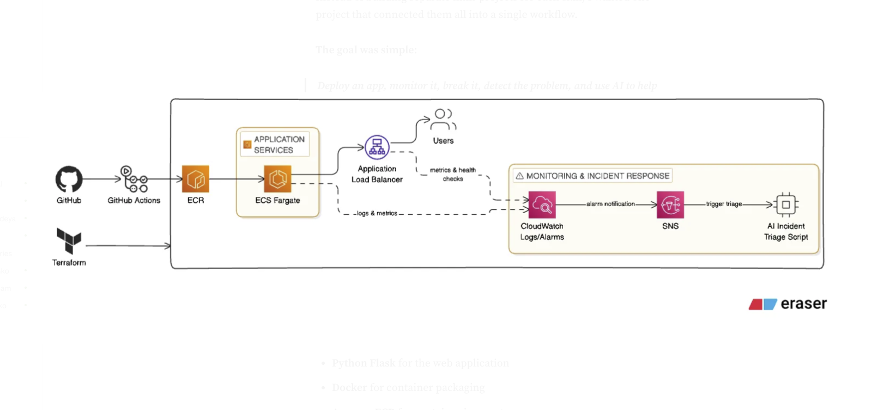

How I Built an AI-Assisted SRE Workflow on AWS with Terraform, ECS Fargate, GitHub Actions, CloudWatch, and LLM-Based Incident Triage

Architecture: GitHub Actions → ECR → ECS Fargate → ALB → CloudWatch → SNS → AI Triage
Modern Site Reliability Engineering is no longer just about keeping servers alive. It is about building reliable systems, automating operational workflows, improving visibility, and responding faster when incidents happen. I built a hands-on project that simulates how a junior SRE might deploy, monitor, troubleshoot, and investigate a production-style application on AWS — and added an AI layer to assist with incident triage.
Tools & Services
Why I Built This
Many SRE and DevOps roles today ask for experience with Infrastructure as Code, AWS cloud services, containers, CI/CD pipelines, monitoring, incident response, and AI-assisted operations. Instead of building separate mini-projects for each skill, I wanted one project that connected them all into a single workflow.
The goal was simple: deploy an app, monitor it, break it, detect the problem, and use AI to help triage the incident.
Architecture
Application traffic flows through a load balancer to containerized services running on ECS Fargate. Logs and metrics are continuously collected by CloudWatch. Alarms notify operators through SNS when thresholds are crossed, and an AI triage script can summarize symptoms and suggest next steps.
Building the Application
I started with a lightweight Flask application. The goal was not a feature-rich product but something simple that could support realistic operational testing. The app included several key endpoints:
/— main application response/health— health checks for the ALB/slow— simulate latency/error— intentionally return HTTP 500/random— simulate intermittent failures
These endpoints became essential later for monitoring validation and incident simulation.
Containerizing with Docker
I containerized the app using a slim Python base image with Gunicorn as the application server, making it portable and production-friendly. After building and testing the image locally, I tagged and pushed it to Amazon ECR so that ECS could pull it during deployment.
Deploying to ECS Fargate
I first deployed manually in the AWS console to troubleshoot interactively before codifying everything in Terraform. The manual setup included creating an ECS cluster and task definition, attaching it to an Application Load Balancer, and configuring CloudWatch log collection. This step already surfaced real engineering challenges.
Real Troubleshooting Challenges
APP_VERSION and APP_ENV were accidentally configured as ValueFrom instead of plain Value. ECS interpreted them as secret references. Fixed by moving them to regular environment variables.
Built on Apple Silicon (ARM), but the ECS task was configured for linux/amd64. Fixed by rebuilding with Docker Buildx: docker buildx build --platform linux/amd64 --push
Root cause was network connectivity between the ALB and ECS tasks. Diagnosed by validating port 5000 access, then scoped the security group to allow port 5000 only from the ALB security group.
Converting to Terraform
Once the manual deployment worked, I recreated the full infrastructure in Terraform. The stack provisioned:
- CloudWatch log group
- ECS cluster and task definition
- IAM task execution role
- ALB and target group with health check listener
- ALB and ECS task security groups
- ECS service wired to the load balancer
After terraform apply, the infrastructure deployed successfully. I verified it by testing /health, /, and /error — confirming that the Terraform-managed version was live and behaving correctly.
CI/CD with GitHub Actions
I added a GitHub Actions pipeline to automate the full delivery flow: push code → build Docker image → push to ECR → trigger ECS redeployment. AWS credentials were stored as GitHub repository secrets. After committing a visible change and pushing, I confirmed the update appeared through the ALB after the workflow completed.
Monitoring & Alerting with CloudWatch and SNS
With deployment working, I set up observability. CloudWatch Logs collected application output from ECS. An SNS topic with email subscription handled alert notifications. I created three CloudWatch alarms:
Monitored HTTPCode_Target_5XX_Count — detects application-level failures.
Monitored TargetResponseTime — detects latency degradation.
Monitored HealthyHostCount — detects target health degradation.
Simulating Incidents
Once monitoring was in place, I validated it by triggering controlled incidents.
HTTP 500 errors: Repeatedly hit /error 20 times, generating repeated 500 responses and triggering the 5xx alarm.
Elevated response time: Repeatedly hit /slow 15 times, pushing average target response time above the threshold and triggering the high response time alarm.
Both alarms fired successfully and delivered email notifications through SNS — validating that the full signal pipeline was wired together correctly.
AI-Assisted Incident Triage
Instead of treating AI as a chatbot to manually ask for help, I integrated it directly into the incident workflow. I built a Python triage script that reads structured incident data and sends it to an LLM for analysis.
The incident data included: service name, environment, incident time, alarm names, symptoms, metrics, affected endpoints, recent changes, sample logs, and operational notes.
The script generates a structured triage report covering:
- Incident summary
- Likely cause
- Severity assessment
- Immediate response steps
- Investigation checks
- Rollback guidance
- Draft postmortem notes
The AI is not replacing observability, logs, metrics, or human judgment — it acts as a first-pass incident assistant that helps summarize the situation quickly, identifies likely causes, and reduces time to first understanding.
What I Learned
What I Would Improve Next
- Automatic rollback suggestions tied to ECS task definition revisions
- Parse CloudWatch alarm payloads directly into the triage script
- Pull recent deployment metadata into the triage context
- Generate runbooks automatically from recurring incident patterns